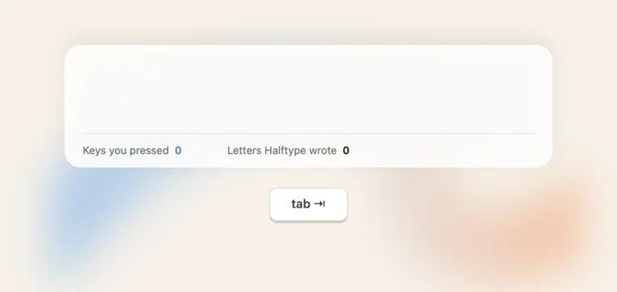
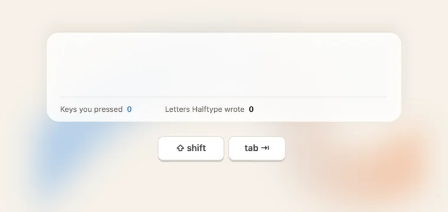

README demo: Tab and Shift-Tab
Mixing the two keys on D's timing. John: "What if we mix tabs and shift tabs? So show using tab for some small suggestions, and then shift tab (after a pause) to show accepting a long suggestion?"
Recommendation: H. Quick Tabs for short suggestions, and a long one that is right to the end gets a 0.4 s look, then one Shift-Tab and one glint across the whole phrase. It saves the most keys of any we've tried (69% and 71%) and shows both keys in 12 s. I holds longer before Shift-Tab, which reads more clearly but drags; J also uses Shift-Tab for two-word suggestions, so it happens more often and Tab shows less. Every option is a real render: same model, sentences and counts.

For comparison: a short beat, quick Tabs, one glint per run. 56% and 64% fewer keys. 12 s.

Short suggestions take quick Tabs; "et me know if you" and "ave any other questions." each take one Shift-Tab after a short look. 69% and 71%. 12 s. long=3 hold=40
0.7 s before each Shift-Tab and a longer rest after, so you can read the whole suggestion first. Clearest, but slower. 14 s. long=3 hold=70 after=15
Shift-Tab whenever two words or more are right, so it's the main move and Tab is rarer. 69% and 74%. 12 s. long=2 hold=45